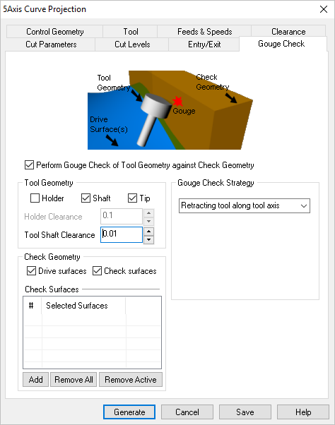

During 5 Axis operations, the following Gouge Check tab is used to avoid tool and holder collisions with the part being machined. You specify a Gouge Check Strategy, Tool Geometry and Check Geometry parameters. Refer to each of the sections below for more information.
 Dialog Box: Gouge Check tab, 5 Axis Milling Operations |
Check this box to enable the Gouge Checking against Check Geometry for the current 5 Axis operation. You will then be able to: •Set tool geometry to be checked for gouge •Set geometry to be checked for gouge •Set strategy for gouge check |
Tool Geometry can be checked against the surface geometry for Tip, Shaft and Holder. When Shaft and Holder geometry options are selected, you can then specify the Tool Shaft Clearance and Holder Clearance parameters. |
Check Geometry allows you to select the types of geometries for collision avoidance during toolpath computation. Selecting Drive Surfaces, only checks for collisions with the surfaces selected for machining. Selecting Check Surfaces, allows you to select surfaces to avoid. |
Selecting Check Surfaces allows you Add and Remove surfaces to check for collision avoidance. Add Selecting Add button minimizes the dialog and prompts you to select surfaces. To end the selection press the enter key on the keyboard or right mouse button click. The selected surfaces are displayed under Check Surfaces list. Selecting a surface from the list highlights the geometry on the graphics area and displays the surface normal.
Remove All Removes all Selected Surfaces from the Check Surfaces list. Remove Active This allows you to remove surface from the selection list. This can be done by selecting a surface from the list of Check Surfaces and click Remove Active or press the delete key on the keyboard. |
This section of the Gouge Check tab allows you to apply a method to the toolpath when a collision or gouge is detected. The following strategies are the available:
|